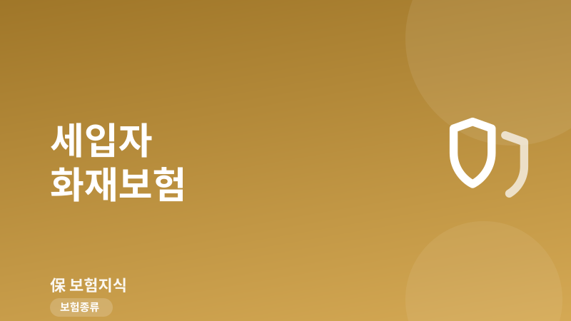
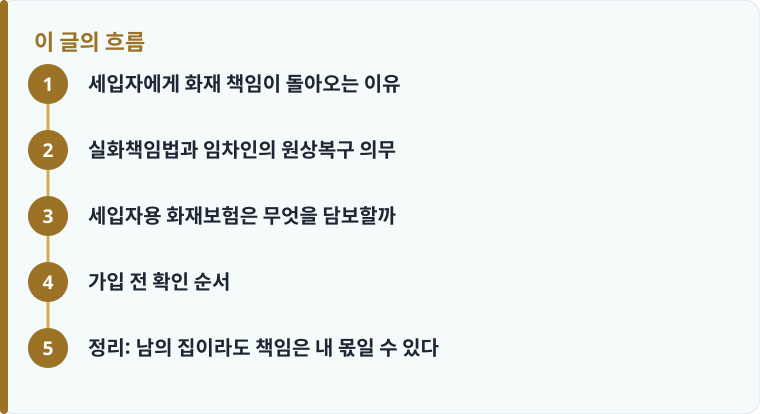

세입자의 실수로 불이 나면 임차한 집의 원상복구 의무가 세입자에게 있어, 수천만 원의 배상 책임이 생길 수 있습니다.
실화책임법 개정 이후 중과실이 아니어도 손해배상 책임이 인정될 수 있어, 임차인배상책임 담보 준비가 필요합니다.
아파트 단체화재보험은 건물 공용부 위주라, 세입자 가재도구와 배상책임까지 자동으로 채워 주지 않는 경우가 많습니다.
세입자에게 화재 책임이 돌아오는 이유
전세나 월세로 사는 사람들은 흔히 ‘건물은 집주인 것이니 불이 나도 집주인 보험이 처리한다’고 생각합니다. 하지만 화재 원인이 세입자 쪽에 있으면 이야기가 달라집니다. 전기장판 과열, 튀김 요리 중 자리를 비운 사이 번진 불, 문어발 콘센트에서 시작된 합선처럼 세입자의 부주의로 불이 나면, 세입자는 임차한 집을 원래 상태로 되돌려 놓을 ‘원상복구 의무’를 지게 됩니다. 화재보험의 기본 구조가 궁금하다면 화재보험 기본 정리를 먼저 읽으면 이 글이 훨씬 쉽게 이해됩니다.
문제는 화재가 자기 집 한 채로 끝나지 않는다는 데 있습니다. 다세대주택이나 아파트에서는 위층·아래층·옆집으로 불과 연기, 그리고 진화 과정의 물피해까지 번지기 쉽습니다. 이렇게 이웃집에 준 손해는 세입자 개인의 배상책임으로 남는데, 배상 금액이 수천만 원에서 억 단위까지 커질 수 있어 개인이 감당하기 어렵습니다. 즉 세입자에게 화재보험이 필요한 이유는 ‘내 살림을 지키기 위해서’만이 아니라 ‘남에게 줄 손해를 대비하기 위해서’이기도 합니다. 특히 전세보증금을 지키려고 가입한 보험이 정작 배상책임을 담보하지 않는 경우가 많아, 이름만 화재보험이라고 안심하기 어렵습니다.
실화책임법과 임차인의 원상복구 의무
과거의 실화책임법은 ‘중대한 과실’로 낸 불이 아니면 이웃에 대한 손해배상 책임을 지지 않도록 하고 있었습니다. 그러나 2009년 법 개정 이후에는 경과실로 난 불이라도 손해배상 책임 자체는 인정하되, 법원이 사정을 참작해 배상액을 줄여 줄 수 있는 구조로 바뀌었습니다. 쉽게 말해 ‘실수로 낸 불이니 나는 책임이 없다’는 논리가 더 이상 통하지 않게 된 것입니다. 배상액이 감경될 수는 있어도 책임이 아예 사라지는 것은 아니라는 점이 핵심입니다.
여기에 더해 세입자는 집주인에 대해 별도의 계약상 의무를 집니다. 민법상 임차인은 빌린 물건을 ‘선량한 관리자의 주의’로 사용하고 계약이 끝나면 원래 상태로 반환해야 하는데, 자신의 과실로 집이 불에 탔다면 이 원상복구 의무를 위반한 것이 됩니다. 이때 세입자가 ‘불이 난 것은 내 잘못이 아니다’라는 점을 스스로 입증하지 못하면 집주인에게 건물 손해를 배상해야 할 수 있습니다. 이웃에 대한 실화 책임과 집주인에 대한 원상복구 책임이 겹치면 세입자 한 사람이 떠안는 부담은 예상보다 훨씬 커집니다.
보험을 준비할 때는 이런 배상 성격의 손해와 내 재산 손해를 구분해서 보는 것이 좋습니다. 담보별 용어가 헷갈린다면 보험의 기본 개념을 참고해 ‘배상책임’과 ‘재물손해’가 어떻게 다른지 정리해 두면 상품을 고를 때 실수를 줄일 수 있습니다.

세입자용 화재보험은 무엇을 담보할까
세입자에게 실질적으로 필요한 담보는 크게 세 가지입니다. 첫째는 ‘임차인배상책임’으로, 세입자의 과실로 임차한 집이나 이웃집에 손해를 입혔을 때 그 배상금을 보상하는 담보입니다. 화재뿐 아니라 폭발, 붕괴, 누수 사고까지 함께 담보하는 상품이 많아, 화재·폭발·붕괴 특약이 포함되어 있는지 확인하는 것이 중요합니다. 이 담보가 세입자 화재 대비의 핵심이라고 볼 수 있습니다.
둘째는 세입자 본인의 가재도구, 즉 가전제품과 가구 등 집 안 살림을 화재로 잃었을 때 보상받는 ‘가재도구 화재손해’ 담보입니다. 건물은 집주인 소유라 세입자 보험으로 건물 자체를 보상받기는 어렵지만, 자기 살림은 세입자 몫이므로 별도로 챙겨야 합니다. 셋째는 화재로 집을 못 쓰게 됐을 때의 임시 거주비 등 부수적인 비용 담보인데, 상품에 따라 유무가 갈리므로 약관에서 확인해야 합니다. 필요한 보장금액을 가늠하기 어렵다면 보장금액 계산 기준으로 가재도구 시가와 예상 배상 규모를 함께 따져 보는 것이 좋습니다.
배상책임 담보는 한도 금액을 확인하는 것이 특히 중요합니다. 임차인배상책임 한도가 3,000만 원이나 5,000만 원처럼 설정돼 있으면, 실제 배상액이 그 한도를 넘는 부분은 세입자가 직접 부담해야 합니다. 다세대·고층 아파트처럼 피해가 커질 수 있는 환경이라면 한도를 1억 원 안팎으로 넉넉히 잡는 것이 안전합니다. 반면 원룸이나 소형 주택 위주라면 무리하게 한도를 높이기보다 보험료와 균형을 맞추는 편이 합리적입니다. 또한 배상책임 담보는 사고 한 건당 보상하는 방식이 대부분이라, 자기부담금이 얼마인지도 함께 봐야 실제 손에 쥐는 보상액을 정확히 가늠할 수 있습니다.
작성·검수 기준
이 글은 특정 보험사 상품을 권유하기 위한 것이 아니라, 전세·월세 세입자가 화재 위험을 대비할 때 알아야 할 실화책임법과 임차인배상책임, 원상복구 의무의 일반적인 원리를 설명하기 위해 작성했습니다. 실화책임법의 적용과 배상액 감경 여부, 담보 범위와 한도는 사고의 구체적 사실관계와 가입 시점의 약관에 따라 달라질 수 있습니다.
정확한 보장 범위는 본인 증권의 약관과 상품설명서, 그리고 화재보험 담보 구조를 함께 확인하는 것이 가장 정확합니다.
가입 전 확인 순서
세입자 화재보험을 고를 때는 ‘내 살림 보상’보다 ‘남에게 줄 손해 배상’을 먼저 챙기는 것이 순서입니다. 임차인배상책임 담보가 빠져 있으면 정작 큰 사고에서 도움을 받지 못할 수 있기 때문입니다. 아래 순서대로 확인하면 빠뜨리는 부분을 줄일 수 있습니다.
- 임차인배상책임 담보가 포함돼 있는지, 화재·폭발·붕괴를 모두 담보하는지 확인합니다.
- 배상책임 한도 금액(예: 5,000만 원 또는 1억 원)이 주거 환경에 맞는지 봅니다.
- 가재도구 화재손해 담보 여부와 보상 한도를 확인합니다.
- 내가 사는 아파트의 단체화재보험이 세입자 배상책임까지 보장하는지 관리사무소에 문의합니다.
- 중복·공백을 정리한 뒤 보험료와 한도의 균형을 보고 최종 결정합니다.
정리: 남의 집이라도 책임은 내 몫일 수 있다
세입자는 건물의 소유자가 아니지만, 자신의 과실로 난 불에 대해서는 이웃과 집주인 모두에게 책임을 질 수 있습니다. 아파트 단체화재보험은 대개 건물 공용부와 기본 재산 위주라 세입자의 배상책임과 가재도구까지 자동으로 메워 주지 않는 경우가 많아, ‘우리 아파트는 단체보험이 있으니 괜찮다’고 넘기기 전에 보장 공백을 직접 확인해야 합니다. 소비자가 놓치기 쉬운 함정은 보험 소비자 유의사항에서도 확인해 두면 도움이 됩니다.
다른 보험 정보 글이 궁금하다면 보험지식 블로그에서 이어 읽어 보세요. 가입 전에는 반드시 약관과 상품설명서를 확인하는 것이 가장 안전한 방법입니다.